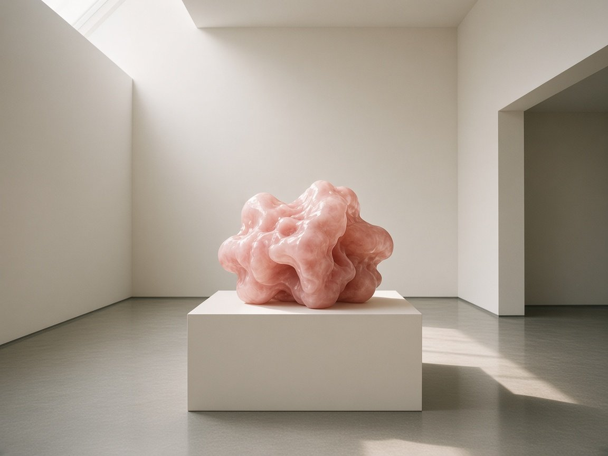
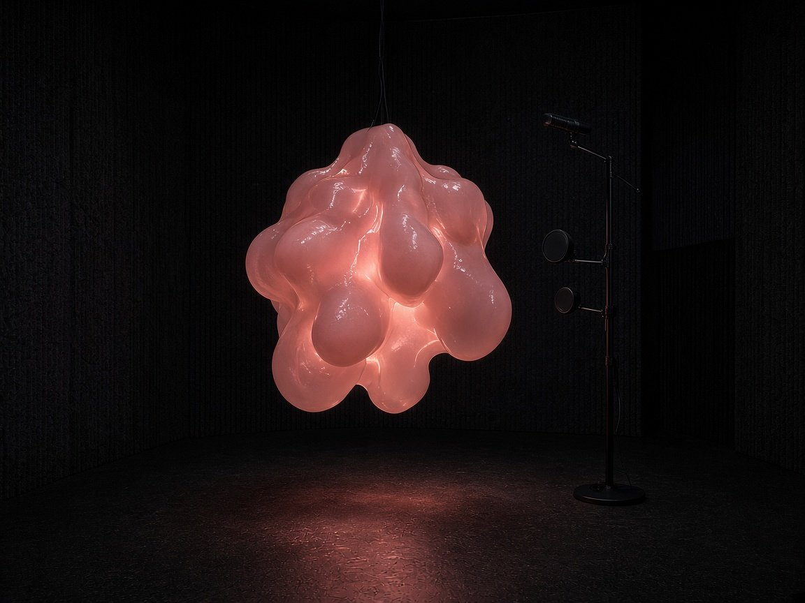
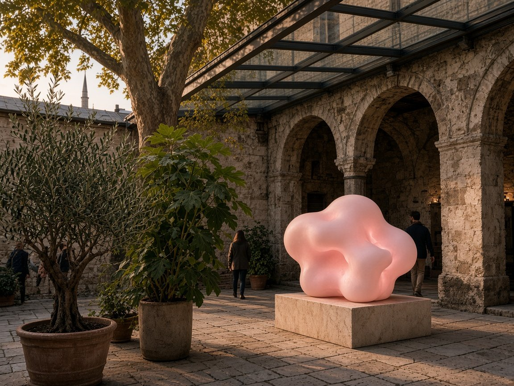
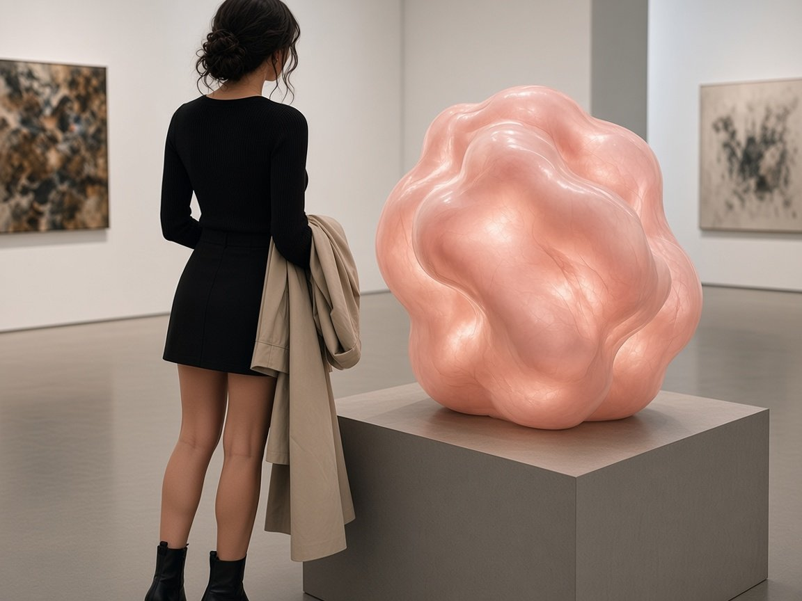

Concept: an organ for art memory, not a kioskKavram: Bir müze ekranı değil, sanat belleği için canlı bir organ
Museum audio guides lecture; chatbots sit behind flat glass and pretend to know everything. Turkish Art Blob takes the opposite route. It has no face, no eyes, and no screen full of buttons — just an uncanny, fleshy, breathing mass of warm tissue that quivers when you speak and swells as it answers aloud.
Ask it in Turkish or English about the history of the Istanbul Biennial since 1987, the lineage of conceptual practice in 1990s Beyoğlu, a painting movement, or what is on view at an independent space right now. Rather than flattening Turkish contemporary art into generic global summaries, the work treats local exhibition histories, artist-run initiatives, critical essays, and institutional archives as primary material.
As the conversation turns — from joyful colour theory to archival politics, video art, or loss — the blob's surface tension, breathing cadence, and subsurface hue subtly shift. And when it does not know something, it says so plainly instead of inventing an answer.
Most conversational AI installations bolt a cloud wrapper onto an avatar rig. Here, both the aesthetic constraints and infrastructure choices are part of the artwork:
- Procedural embodiment (no Blender, no baked rigs): an icosphere displaced on the GPU by multi-octave 3D simplex noise inside a custom
MeshPhysicalMaterial(clearcoat,sheen,transmission, and red-shiftedattenuationColorapproximating dermal subsurface scattering). - Audio + semantic coupling: real-time FFT amplitude from Web Audio
AnalyserNodedrives vertex displacement while topic/sentiment classifiers shift rest colour and deformation gain (e.g. calmer contraction on elegiac/political subjects, higher-frequency ripples on media/data art). - Bilingual grounding without hallucination: system prompts enforce short spoken-cadence answers (2–5 sentences, zero markdown) in the speaker's language (Turkish or English), grounded in numbered source passages with explicit uncertainty when retrieval falls short.
- Open-source & low-cost stack: built from inspectable open weights and permissive libraries rather than proprietary black-box avatar platforms.
How it worksNasıl çalışır?
In plain words, every exchange passes through four steps in about a second:
- Ears (Listening) — Directional microphones pick up your voice in the room and turn spoken Turkish or English into text on the spot, automatically noticing which language you used.
- Memory (Looking up) — Before forming a thought, it searches an internal library of open art writing (biennial histories, museum collections, open academic journals) and, if needed, reads a live museum or gallery web page in the moment.
- Brain (Thinking without shortcuts) — An open-weights language model composes a concise spoken reply grounded in those passages and names its sources aloud or on a small companion label. We run models with their native parameters — no flattened multi-provider routers and no quality-degrading compression shortcuts.
- Voice & Skin (Speaking) — Open speech synthesis reads the answer aloud in Turkish or English while the sound wave itself drives the physical light and surface ripple of the blob.
Whether running on a dedicated local machine tucked inside the plinth or inside a cryptographically sealed cloud enclave, no outside company gets to eavesdrop on the room.
- STT:
faster-whisper(large-v3-turboon local installation GPU;small/mediumon CPU prototypes) with voice-activity detection (VAD) for low-latency turn taking in Turkish and English. - Cross-lingual RAG:
BGE-M3dense + sparse multilingual embeddings over ~500-token exhibition/artist chunks. Held in RAM (LanceDB / NumPy / FAISS) inside the local node or enclave so user queries never leak to external vector SaaS. - LLM (native parameters, no degraded quantization): full-precision / native-parameter open models —
Gemma 4 31BorQwen3series — served directly via vLLM / Ollama locally on dedicated hardware or inside an attested Phala TEE (Intel TDX + NVIDIA Confidential Computing). No flattened single-router APIs that strip native sampling parameters or silently swap quantized backends. - TTS:
PiperTurkish & English ONNX voices for fast CPU response, paired with GPU neural synthesis on the local installation node for richer vocal warmth. - Static delivery: Cloudflare Pages serves only static HTML/JS/shader code; live audio and text travel either over local loopback inside the gallery plinth or over TLS terminating directly inside the attested enclave.
Data ethics: the two-lane policyVeri etiği: İki şeritli kaynak politikası
An art project about cultural memory shouldn't begin by scraping art institutions against their wishes. Many museums, archives, and independent galleries in Turkey publish explicit machine-readable notices saying "do not train AI on our archives." We treat those boundaries as binding rules, splitting the blob's knowledge into two strict lanes:
Every domain is checked before ingestion against robots.txt, Cloudflare Content-Signal headers (ai-train=no, use=reference), /llms.txt, and site terms of service. Sources are partitioned into two strict pipelines:
📚 Store lane (Open & indexed)Arşiv şeridi (Açık kaynaklar)
Material released under open licences or open crawl policies — such as Wikidata artist graphs, Wikipedia TR/EN biographies, open-access Turkish art journals on DergiPark, MoMA/Tate/Met CC0 datasets, and openly crawlable museum pages — is gathered politely into the blob's local index with full attribution.
CC0 / CC BY-SA datasets (Wikidata SPARQL Turkish artist graph, Wikipedia TR/EN, DergiPark OAI-PMH art journals, MoMA/Tate/Met CC0) plus sites whose robots.txt permits crawling without ai-train=no signals (e.g. İKSV Biennial sitemaps, Istanbul Modern, Sakıp Sabancı Museum, Arter, Argonotlar, e-skop). Chunked with URL + license metadata and embedded locally with BGE-M3.
🔎 Live lane (Cited on the fly, never stored)Canlı şerit (Anlık okuma ve kaynak gösterme, kayıt yok)
Institutions and galleries that bar AI training or bulk archiving — such as SALT Research, Pera Museum, or galleries blocking AI crawlers — are never stored in our database or used to train anything. When a visitor asks about them, the system reads the public page in real time like a human reader, quotes a brief fact with clear spoken credit, and forgets the page as soon as the conversation ends.
Domains signalling Content-Signal: ai-train=no (SALT Research, Pera Museum) or disallowing AI user-agents (Galerist, Dirimart, Pi Artworks, Zilberman, Unlimited). Fetched on demand with an honest user-agent, respecting Crawl-delay and HTTP 403s; ≤2 short snippets enter transient RAM context, the URL is cited, and zero text/vectors/logs are written to disk.
Privacy & sovereign infrastructureGizlilik ve bağımsız altyapı
Gallery visitors often speak candidly — asking naive questions, thinking aloud, or bringing personal memories into how they read an artwork. Turning a sculpture into a hidden surveillance microphone would ruin the trust that makes conversation possible.
- Private from the first word: All speech recognition, retrieval, and language generation happen either on dedicated local hardware inside the installation or inside a sealed hardware enclave. No big-tech AI router sees your transcript.
- Zero recording by default: Audio exists in memory only for the seconds needed to answer, then disappears.
- Opt-in with a destructible key: If a visitor explicitly opts in to donate a conversation to an archive, that single recording is locked with its own cryptographic key. Withdrawing consent destroys that key ("crypto-shredding"), making the recording permanently unreadable everywhere, including offline backups.
- Multi-country encrypted backups: Project corpus and encrypted artefacts are backed up across independent jurisdictions — including Switzerland and Iceland, not solely the EU or US clouds.
- Private inference from day one: Local GPU inference inside the installation unit, paired with Phala Cloud TEE (Intel TDX + NVIDIA H100/H200 Confidential Computing, verifiable per-request dstack attestation) or EU-based Edgeless Privatemode as attested remote fallback when bandwidth/compute requires it.
- Zero-retention session memory: Audio buffers are decoded in RAM (
io.BytesIO) and discarded post-transcription; no request-body logging, no Cloudflare AI Gateway plaintext termination. - Envelope encryption & crypto-shredding: Any opt-in recording gets a unique
AES-256-GCMdata key wrapped inside the enclave/owner keyring; deletion shreds the per-session key so even immutable WORM backups become indecipherable ciphertext. - 3-2-1 multi-jurisdiction backups: Client-side
resticencryption mirrored across Cloudflare R2 + Infomaniak Swiss Backup (Switzerland, FADP) + 1984.is / Storj (Iceland / distributed E2EE) — avoiding single-vendor lock-in and avoiding Hetzner.
⚖️ Note on data protection: Where visitors in Türkiye opt in to any recording, Turkish Personal Data Protection Law (KVKK) alongside GDPR and Swiss FADP principles apply — requiring clear bilingual notice (aydınlatma metni) and explicit consent.
The physical installation visionFiziksel yerleştirme vizyonu
Right now, Turkish Art Blob exists as a working software and local-voice prototype. The goal of the next six months is to bring it off the flat browser window and into physical space as a self-contained sculptural object — something you encounter at body scale in a gallery, project space, or sheltered courtyard.
Sculptural skin & light
Two fabrication routes will be tested side by side: translucent platinum-cure silicone cast in organic lobes with internal projection / addressable LED subsurface glow, and rear-projected dome/membrane skins that carry the live fluid shader onto a curved three-dimensional body.
Prototyping two physical embodiments: (1) shore-00 translucent platinum silicone shell over an inner diffuser core driven by high-CRI addressable LEDs + surface transducers, and (2) seamless rear-projection onto a custom thermoformed acrylic/silicone membrane mapped from the live WebGL/GLSL shader at 60 fps.
Room acoustics & local brain
A directional microphone array focuses on the person standing in front of the plinth while ignoring background room chatter. A concealed speaker and tactile bass transducer inside the pedestal make the voice feel as though it resonates directly from the tissue mass.
Beamforming microphone array with acoustic echo cancellation (AEC) so visitor barge-in works cleanly in reverberant gallery rooms, paired with a concealed coaxial driver + tactile exciter inside the plinth and a quiet small-form-factor local GPU box running the full TR/EN pipeline offline-first.




All four images above are concept mock-ups illustrating target scale, lighting, and spatial configurations for the 6-month build — not photographs of completed exhibitions.
Why $5,000 upfront for a 6-month buildNeden 6 aylık üretim için peşin 5.000 ABD Doları gerekiyor?
Proposed itemized budget breakdown (USD $5,000)Önerilen bütçe dağılımı (5.000 ABD Doları)
The figures below are a proposed breakdown based on current component, material, and enclave/backup pricing. Minor reallocations between hardware and skin fabrication may happen once bench tests in Month 2 conclude.
| Category | What it covers | Proposed (USD) |
|---|---|---|
| 1. Local private-inference hardware | Quiet small-form-factor GPU unit (24 GB VRAM class, e.g. used/refurb RTX 3090/4090-class SFF build or high-unified-memory mini node) housed inside the plinth to run native-parameter open models, faster-whisper, BGE-M3, and TTS on-site with sub-second latency. |
$1,550 |
| 2. Sculptural skin & optical prototyping | Platinum-cure translucent silicone (Shore 00), pigments, 3D-printed mould positives, inner acrylic diffuser shells, high-CRI addressable LED / short-throw projection optics for subsurface illumination tests. | $950 |
| 3. Acoustic array & tactile sound | Directional beamforming microphone array (far-field gallery pickup + echo cancellation), concealed full-range speaker, bass surface transducer/exciter so the sculpture physically vibrates as it speaks, audio interface & cabling. | $550 |
| 4. Plinth fabrication & thermal enclosure | Ventilated gallery plinth / mounting hardware, acoustic baffling for silent cooling, power conditioning, transport crate for safe site install. | $600 |
| 5. Private enclave overflow & multi-jurisdiction backups (6 mo) | 6 months of attested Phala TEE compute for online/remote mirror sessions plus encrypted 3-2-1 backups across Switzerland (Infomaniak), Iceland (1984.is) / Storj, and Cloudflare R2, plus domain Ops. | $450 |
| 6. Artist R&D, corpus curation & contingency | Modest allocation toward 6 months of corpus cleaning, bilingual Turkish/English evaluation testing, mould iterations, shipping/customs buffer in Türkiye, and open documentation. | $900 |
| Total upfront budget | Proposed 6-month installation build | $5,000 |
6-month roadmap & deliverables6 aylık yol haritası ve çıktılar
Private local node & bilingual corpus v1
Assemble and benchmark the local private-inference box; finalize the two-lane ingestion pipeline (open Turkish/global art store-lane index + verified live-lane citation fetcher with zero retention).
Voice latency, barge-in & mood coupling
Get end-to-end Turkish and English spoken turn-taking under ~1.2 seconds with echo cancellation; calibrate semantic mood mapping between art topics, vocal cadence, colour, and surface deformation.
Material & skin bench tests
Cast small-scale translucent silicone skin studies and test internal LED subsurface scattering versus curved rear-projection; select the winning physical fabrication method and publish test notes.
Full-scale body & ventilated plinth
Fabricate the full-scale (~70–85 cm) sculptural body, build the acoustically baffled plinth enclosure, and integrate concealed speakers, tactile exciters, and directional mic hardware.
Stress testing & bilingual evaluation
Run multi-hour continuous thermal and acoustic stress tests in reverberant rooms; invite artists and critics for closed studio conversations in Turkish and English to audit citations and edge cases.
Exhibition-ready unit & open documentation
Deliver the complete, crated, plug-and-play sculptural unit ready for gallery or public-space installation, alongside video documentation, architectural tech rider, and open-source code release.
Ongoing operating cost after the build (software/cloud mirror reference)
Once the physical unit is built, running it offline on its own plinth hardware costs only wall electricity. For the online mirror / attested enclave mode (~20 hours of active conversation per month), ongoing cloud costs sit around $55–60/month (Cloudflare Pages static hosting $0, scheduled Phala confidential VM ~$46, native Gemma 4 31B attested API ~$7, multi-jurisdiction encrypted backups under 100 GB ~$2–5).
Quick glossaryKısa sözlük
- Subsurface scattering (SSS)
- The way light penetrates translucent surfaces like human skin, wax, or silicone and scatters warmly underneath before exiting — what makes the blob read as living tissue rather than plastic.
- RAG (Retrieval-Augmented Generation)
- "Look it up before speaking." Instead of relying on foggy model memory, the system retrieves real passages first and cites where each claim came from.
- ai-train=no / Two-lane policy
- A machine-readable signal published by institutions saying their archives may not be used to train AI. Our Live lane reads public pages only in the moment for short cited reference and never stores them.
- TEE (Trusted Execution Environment)
- A hardware-encrypted enclave inside a processor where code and memory are sealed so not even the server host can inspect the conversation.
- Crypto-shredding
- Encrypting an opt-in recording with its own unique key so that deleting the key permanently destroys access to the recording everywhere at once.
Support, commission, or host the installationProjeyi destekleyin, üretim ortağı olun veya sergileyin
I am looking to raise the USD $5,000 upfront production budget — through an upfront patron/grant contribution, milestone bounty funding, an art-and-technology commission, or a hosting space that wants to premiere the physical sculpture at the end of the 6-month build.
If you want to fund the 6-month build, co-produce the physical unit, propose a venue in Istanbul or abroad, or ask technical/curatorial questions, reach out directly: